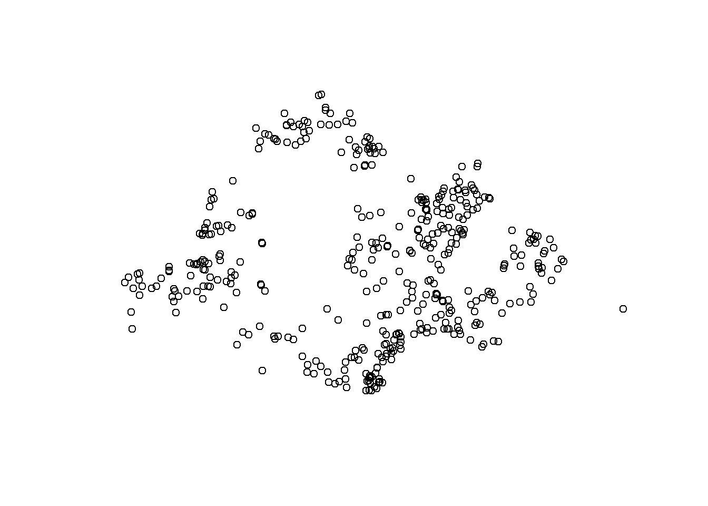
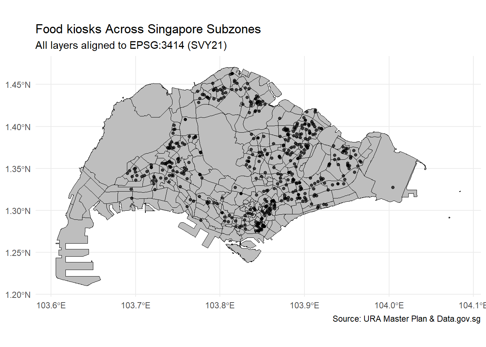

pacman::p_load(readr, dplyr, tidyr, stringr, lubridate,terra,spatstat,
sf, tmap, units, httr, jsonlite, tidyverse,rvest )Take-Home Exercise 1: The Influx of Chinese Bubble Tea Brands in Singapore: A Spatio-Temporal Geospatial Analysis (2024–2025)
Problem Statement
Between 2024 and mid-2025, Singapore has experienced an influx of popular Chinese bubble tea brands such as Mixue, HEYTEA, and Chagee. These entrants are competing directly with established Taiwanese and local players (KOI, LiHo, Gong Cha), reshaping the city’s retail food and beverage landscape.
Understanding where these Chinese brands are locating, when they enter, and how they interact with existing bubble tea ecosystems is crucial for urban retail planning, zoning policies, and SME competitiveness.
This study applies geospatial analytics to uncover the spatial clustering, temporal waves of entry, and proximity to key infrastructure (MRTs, malls, schools) of Chinese bubble tea shops, compared against incumbents. The findings will inform planning authorities, mall operators, and policy makers on how foreign retail entrants shape Singapore’s urban form and consumer spaces.
1. Objectives
Map Spatio-Temporal Distribution
Track when and where Chinese bubble tea brands entered (2024–Jun 2025), and compare hotspots with existing players.Assess Clustering & Competition
Use spatial statistics (KDE, Ripley’s K, Cross-K) to test clustering and co-location with incumbents.Identify Temporal Waves
Apply spatio-temporal KDE (STKDE) to reveal expansion waves from CBD to heartlands.Examine Infrastructure Proximity
Test whether outlets concentrate near MRTs, malls, and schools.Derive Policy Insights
Translate findings into implications for retail zoning, transit-oriented planning, and SME support.
2. Data Wrangling
2.1 Importing ACRA Data (Aspatial)
folder_path <- "data/aspatial/acra"
file_list <- list.files(path=folder_path,
pattern = "^ACRA*.*\\.csv$",
full.names = TRUE)
acra_data <- file_list %>%
map_dfr(read_csv)Saving ACRA data
write_rds(acra_data,
"data/rds/acra_data.rds") Tidying ACRA data (56123 is for bubble tea shops)
### select target businesess, derive year, tidy postal code for geo coding and...
biz_56123 <- acra_data %>%
select(1:24) %>%
filter(primary_ssic_code == 56123) %>%
rename(date = registration_incorporation_date) %>%
mutate(date = as.Date(date),
YEAR = year(date),
MONTH_NUM = month(date),
MONTH_ABBR = month(date, label = TRUE, abbr = TRUE)) %>%
mutate(postal_code = str_pad(postal_code, width = 6, side = "left", pad = "0")) %>%
filter((YEAR == 2024 & MONTH_NUM >= 1) | (YEAR == 2025 & MONTH_NUM <= 6))#|eval:false
#|echo:false
write_rds(biz_56123,
"data/rds/biz_56123.rds")biz_56123 <-
read_rds("data/rds/biz_56123.rds")#biz_56123 <- read_rds("data/rds/biz_56123.rds")
#par(mar = c(4, 4, 2, 1)) # set smaller margins
# plot(biz_56123) # uncomment if it's an sf object and you want a quick plotGeocoding (for finding X,Y coordinates)
postcodes <- unique(biz_56123$postal_code)
url <- "https://onemap.gov.sg/api/common/elastic/search" ##API without paying
found <- data.frame()
not_found <- data.frame(postcode = character())
for (pc in postcodes) {
query <- list(
searchVal = pc,
returnGeom = "Y",
getAddrDetails = "Y",
pageNum = "1"
)
###converting to data frame
res <- GET(url, query = query)
json <- content(res)
if (json$found != 0) {
df <- as.data.frame(json$results, stringsAsFactors = FALSE)
df$input_postcode <- pc
found <- bind_rows(found, df)
} else {
not_found <- bind_rows(not_found, data.frame(postcode = pc))
}
}found <- found %>%
select(1:10)Appending the location information (join it back with 56123 right one with new geo_coded postal_code
2 columns in meter, 2 columns in Lon and Lat
biz_56123_join = biz_56123 %>%
left_join(found,
by = c('postal_code' = 'POSTAL'))write_rds(biz_56123_join, "data/rds/biz_56123_join.rds")Converting into SF data frame
biz_56123_sf <- st_as_sf(biz_56123_join,
coords = c("X","Y"),
crs=3414)
class(biz_56123_sf)[1] "sf" "tbl_df" "tbl" "data.frame"plot(st_geometry(biz_56123_sf))
# case-insensitive regex for trailing street-type words (and anything after them)
suffix_re <- "(?i)\\s+(ROAD|RD|STREET|ST|AVENUE|AVE|DRIVE|DR|LANE|LN|CLOSE|CL|CRESCENT|CRES|TERRACE|TERR|WALK|PLACE|PL|PARK|PK|HEIGHTS|HTS|LINK|VIEW|WAY|COURT|CT|CIRCUIT|CIR|RISE|GROVE|GARDENS|GDN)(\\s+.*)?$"
# create Zone from street_name (fallback to STREET_NAME if needed)
biz_56123_sf <- biz_56123_sf %>%
mutate(
street_raw = coalesce(street_name),
Zone = street_raw %>%
str_replace_all("_", " ") %>% # tidy underscores
str_squish() %>% # trim extra spaces
str_remove(suffix_re) %>% # drop trailing street-type
str_squish() %>%
str_to_upper() # <-- UPPER CASE
)
# quick check
biz_56123_sf %>% select(street_raw, Zone) %>% head()Simple feature collection with 6 features and 2 fields
Geometry type: POINT
Dimension: XY
Bounding box: xmin: 18595.32 ymin: 29312.14 xmax: 40699.29 ymax: 40086.81
Projected CRS: SVY21 / Singapore TM
# A tibble: 6 × 3
street_raw Zone geometry
<chr> <chr> <POINT [m]>
1 RAFFLES QUAY RAFFLES QUAY (29958.79 29312.14)
2 BUKIT BATOK STREET 21 BUKIT BATOK (18595.32 36448.81)
3 HOUGANG AVENUE 8 HOUGANG (34784.67 40086.81)
4 PAYA LEBAR ROAD PAYA LEBAR (34595.3 33453.44)
5 BEDOK NORTH STREET 5 BEDOK NORTH (40699.29 35436.94)
6 ALJUNIED CRESCENT ALJUNIED (33884.7 33772.81)write_rds(biz_56123_sf, "data/rds/biz_56123_sf.rds")2.2 Importing Geospatial Data
mpsz_sf <- st_read("data/geospatial/MasterPlan2019SubzoneBoundaryNoSeaKML.kml") %>%
st_zm(drop = TRUE, what = "ZM") %>% st_transform(crs = 3414)Reading layer `URA_MP19_SUBZONE_NO_SEA_PL' from data source
`C:\ppthaw2024\ISSS626-Geospatial\Take_Home_Ex\Take_Home_Ex01\data\geospatial\MasterPlan2019SubzoneBoundaryNoSeaKML.kml'
using driver `KML'
Simple feature collection with 332 features and 2 fields
Geometry type: MULTIPOLYGON
Dimension: XY
Bounding box: xmin: 103.6057 ymin: 1.158699 xmax: 104.0885 ymax: 1.470775
Geodetic CRS: WGS 84extract_kml_field <- function(html_text, field_name) {
if (is.na(html_text) || html_text == "") return(NA_character_)
page <- read_html(html_text)
rows <- page %>% html_elements("tr")
value <- rows %>%
keep(~ html_text2(html_element(.x, "th")) == field_name) %>%
html_element("td") %>%
html_text2()
if (length(value) == 0) NA_character_ else value
}mpsz_sf <- mpsz_sf %>%
mutate(
REGION_N = map_chr(Description, extract_kml_field, "REGION_N"),
PLN_AREA_N = map_chr(Description, extract_kml_field, "PLN_AREA_N"),
SUBZONE_N = map_chr(Description, extract_kml_field, "SUBZONE_N"),
SUBZONE_C = map_chr(Description, extract_kml_field, "SUBZONE_C")
) %>%
select(-Name, -Description) %>%
relocate(geometry, .after = last_col())###testing hands on 2.2
mpsz_cl <- mpsz_sf %>%
filter(SUBZONE_N != "SOUTHERN GROUP",
PLN_AREA_N != "WESTERN ISLANDS",
PLN_AREA_N != "NORTH-EASTERN ISLANDS")write_rds(mpsz_cl,
"data/rds/mpsz_cl.rds")st_crs(mpsz_cl) == st_crs(biz_56123_sf)[1] TRUEggplot() +
geom_sf(data = mpsz_cl, fill = "gray", color = "black", size = 0.2) +
geom_sf(data = biz_56123_sf, color = "black", size = 1.2, alpha = 0.7) +
labs(title = "Food kiosks Across Singapore Subzones",
subtitle = "All layers aligned to EPSG:3414 (SVY21)",
caption = "Source: URA Master Plan & Data.gov.sg") +
theme_minimal()
2.3 Joining ARCA data and Geospatial data
#####will do laterObjective 1:
biz_56123_ppp <- as.ppp(biz_56123_sf)class(biz_56123_ppp)[1] "ppp"summary(biz_56123_ppp)Marked planar point pattern: 484 points
Average intensity 6.687421e-07 points per square unit
Coordinates are given to 10 decimal places
Mark variables: uen, issuance_agency_id, entity_name, entity_type_description,
business_constitution_description, company_type_description,
paf_constitution_description, entity_status_description, date, uen_issue_date,
address_type, block, street_name, level_no, unit_no, building_name,
postal_code, other_address_line1, other_address_line2, account_due_date,
annual_return_date, primary_ssic_code, primary_ssic_description,
primary_user_described_activity, YEAR, MONTH_NUM, MONTH_ABBR, SEARCHVAL,
BLK_NO, ROAD_NAME, BUILDING, ADDRESS, LATITUDE, LONGITUDE, street_raw, Zone
Summary:
uen issuance_agency_id entity_name
Length:484 Length:484 Length:484
Class :character Class :character Class :character
Mode :character Mode :character Mode :character
entity_type_description business_constitution_description
Length:484 Length:484
Class :character Class :character
Mode :character Mode :character
company_type_description paf_constitution_description
Length:484 Length:484
Class :character Class :character
Mode :character Mode :character
entity_status_description date uen_issue_date
Length:484 Min. :2024-01-01 Min. :2024-01-01
Class :character 1st Qu.:2024-06-05 1st Qu.:2024-06-05
Mode :character Median :2024-11-13 Median :2024-11-13
Mean :2024-10-30 Mean :2024-10-30
3rd Qu.:2025-03-20 3rd Qu.:2025-03-20
Max. :2025-06-30 Max. :2025-06-30
address_type block street_name level_no
Length:484 Length:484 Length:484 Length:484
Class :character Class :character Class :character Class :character
Mode :character Mode :character Mode :character Mode :character
unit_no building_name postal_code other_address_line1
Length:484 Length:484 Length:484 Length:484
Class :character Class :character Class :character Class :character
Mode :character Mode :character Mode :character Mode :character
other_address_line2 account_due_date annual_return_date primary_ssic_code
Length:484 Length:484 Length:484 Min. :56123
Class :character Class :character Class :character 1st Qu.:56123
Mode :character Mode :character Mode :character Median :56123
Mean :56123
3rd Qu.:56123
Max. :56123
primary_ssic_description primary_user_described_activity YEAR
Length:484 Length:484 Min. :2024
Class :character Class :character 1st Qu.:2024
Mode :character Mode :character Median :2024
Mean :2024
3rd Qu.:2025
Max. :2025
MONTH_NUM MONTH_ABBR SEARCHVAL BLK_NO
Min. : 1.000 Apr : 65 Length:484 Length:484
1st Qu.: 3.000 Mar : 63 Class :character Class :character
Median : 5.000 May : 58 Mode :character Mode :character
Mean : 5.411 Jun : 55
3rd Qu.: 8.000 Jan : 50
Max. :12.000 Feb : 47
(Other):146
ROAD_NAME BUILDING ADDRESS LATITUDE
Length:484 Length:484 Length:484 Length:484
Class :character Class :character Class :character Class :character
Mode :character Mode :character Mode :character Mode :character
LONGITUDE street_raw Zone
Length:484 Length:484 Length:484
Class :character Class :character Class :character
Mode :character Mode :character Mode :character
Window: rectangle = [12100.48, 47022.31] x [28677.01, 49401.78] units
(34920 x 20720 units)
Window area = 723747000 square unitsCreating owin object and combining point events
sg_owin <- as.owin(mpsz_cl)
class(sg_owin)[1] "owin"biz56123_sg_ppp = biz_56123_ppp [sg_owin]Clark-Evan Test for Nearest Neighbour Analysis
clarkevans.test(biz56123_sg_ppp,
correction="none",
clipregion="sg_owin",
alternative=c("clustered"))
Clark-Evans test
No edge correction
Z-test
data: biz56123_sg_ppp
R = 0.51417, p-value < 2.2e-16
alternative hypothesis: clustered (R < 1)1) Statistical conclusion
The test statistic R = 0.514 (well below 1) and the p-value < 2.2e-16.
Translation: the food kioks locations are much closer together than we’d expect by random chance—i.e., they are strongly clustered, not evenly spread out.